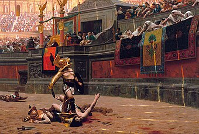

What Were Gladiators Really Like?
The sun is out, the sky is strikingly blue, you’re surrounded by a great wall of eyes, and before you and your sword stands a beast, or a criminal…or maybe someone just like you, enslaved and terrified. You’re a Gladiator.
With the recent release of Gladiator 2, now might be the perfect time to discuss the history behind the movie. First, the name gladiator originates from the word gladius, which means “sword” in Latin. Gladiators were individuals treated like slaves, forced into battle in the colosseum for entertainment. Gladiators would fight beasts, criminals, and other gladiators, and the fights would be a death match. The battles were used by people in power for many purposes: the violent and stimulating battles were held for celebrations, flaunting of wealth, or distractions from whatever problems that the society was facing. Criminals or slaves would often become gladiators. There were different types of gladiators as well, with the classifications depending on the types of gear used and the fighting style. There were gladiators that used shields, swords, and even tridents.